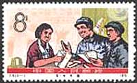
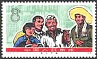
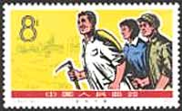
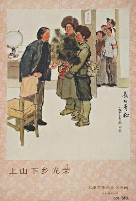
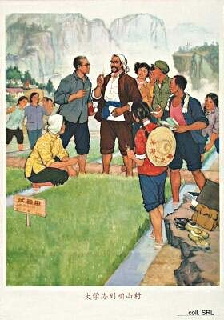
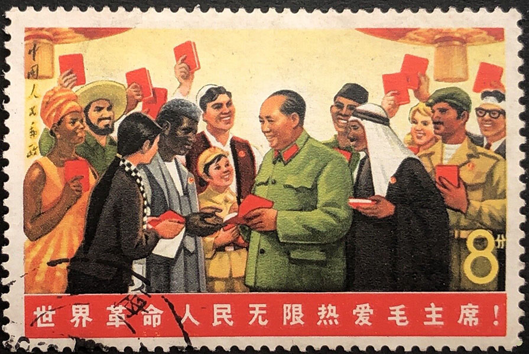
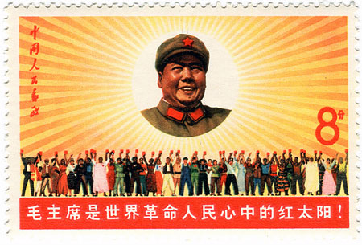
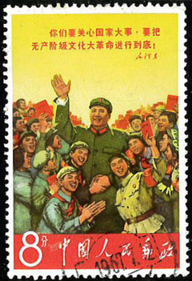
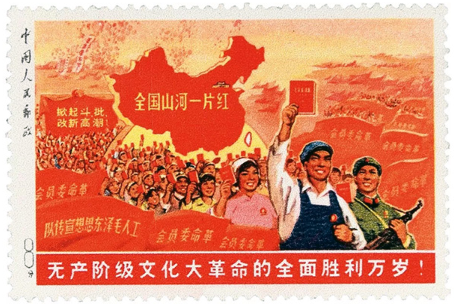

"Better fewer, but better."
Lenin, then Li Rongrong.
The 7 May Cadre Schools were set up in late 1968, in accordance with Mao Zedong's 7 May Directive, which was released on 7 May 1966. In this directive, Mao suggested setting up farms, later called cadre schools, where cadres and intellectuals, "sent down" from the cities, would perform manual labor and undergo ideological reeducation. "Sending down" cadres was first put into practice during the Great Leap Forward in 1958. Cadres would take turns to go the villages or grass-roots levels to gain first-hand experience in productive work.
During the Cultural Revolution, "transferring cadres to lower levels" became a favored method to remove unyielding cadres and intellectuals from the cities. The Central Committee and the State Council built 106 7 May cadres schools, scattered over eighteen provinces. Over 100,000 officials from the central government and 30,000 family members were sent there. Lower-level government offices set up tens of thousands more cadre schools, where an unknown number of middle- and lower-ranking cadres was sent for reeducation.



The living conditions in these schools were usually quite bad. The cadres, used to a less strenuous life, had to do manual work, growing their own food. The aim of the schools was to become self-sufficient in food; usually, however, basic rations had to be brought in by the units to which the cadres belonged. Moreover, the goal of learning from the poor and lower-middle level peasants was no success either: many peasants living in areas where a cadre school was set up resented their arrival, and saw the cadres, who in their eyes did not amount to much in terms of labor power, as a threat to their own survival. Many cadres and intellectuals could not deal with the harsh life and died in the process of reeducation.


Employees of institutions were either regularly rotated to work on the farm or were on the farm full time for a number of years. This was true of all colleges and universities in China, since between 1968 to 1972, no new students were enrolled. Students who did not graduate in 1968 followed to the farm. This was a separate thing from the Red Guards being dispatched to the countryside. The Red Guards, at least at that time, were supposed to stay in the country for good. There was a term to refer to their stay in the country: zhagen (get rooted). Because there were no or few new students (1972 or 1973 were the first years new students were enrolled, so there were only one or two classes of students by 1974), many teachers were assigned non-teaching jobs.

After Lin Biao (Lin Piao) fell from power in 1971, the cadres and intellectuals, as well as their dependents, were allowed to return to the cities and resume their work. One by one, the 7 May cadre schools were closed down; they ceased to exist after the Cultural Revolution. The net result is the estimated number of 500,000 deaths caused by the Cultural Revolution (Source)
The set "Chairman Mao's May 7 Directive", shown above, appeared on May 7, 1976 and has commemorated the ten years passed since the directive was made public. Point on the stamps with the mouse for more information. Text and both posters courtesy of Stefan Landsberger's "Chinese Propaganda Posters" site . Just notice how polyvalent was Chen Yonggui, who brought his contribution as well to the Cultural Revolution as to the reeducation of Chinese intellectuals.


During the Cultural Revolution an order came that forbad to apply postmarks to any stamps featuring the "Great Helmsman", such as to the one shown above, and issued Oct. 1, 1967 for the PRC's 18th anniversary (Scott 965, "The Sun of the Revolution"). The employees who were canceling stamps should be very careful, as those who erred were charged with a "serious political incident and counter-revolutionary act." Source: Michael Rogers, Linn's Stamps News Online, 01/14/2013.

And finally the most valuable Chinese stamp, called Big Patch on Red, sold for the equivalent of two millions US dollars. The stamp shows revolutionary workers marching with Mao’s “little red book”, and features Communist slogans such as “All mountains and rivers across the country are a sea of red”, and “Long live the total victory of the Cultural Revolution without the bourgeoisie”. " Vintage Communist Party propaganda items are prized by Chinese antiques collectors, despite the government's tight controls on any media reporting or public discussion surrounding the events of the Cultural Revolution." Source.
|
|
Created:
08/20/03.
Revised:
2/14/2024.
|